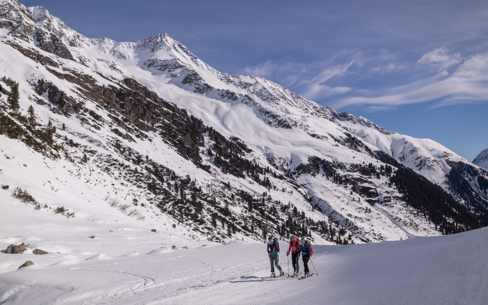
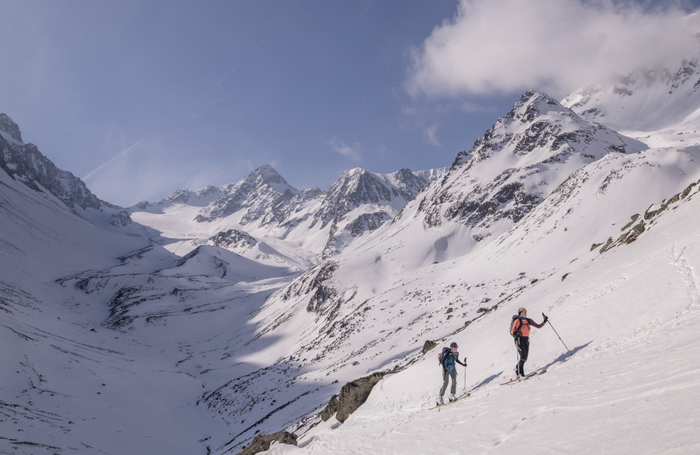

Die Firn-Freundinnen
Wir wohnen alle drei in bzw. im Umkreis von Innsbruck und sind im Sommer und Winter gerne zusammen am Berg unterwegs. Während wir im Sommer gerne klettern, lieben wir im Winter und Frühjahr das Skitourengehen. Da besonders die Frühjahrsskitouren die schönen sind, entstand die Idee, ein "Planungstool" zu erstellen, das einem hilft, auch spontan eine tolle Tour, am besten mit Firn, zu finden.
